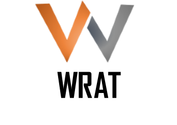
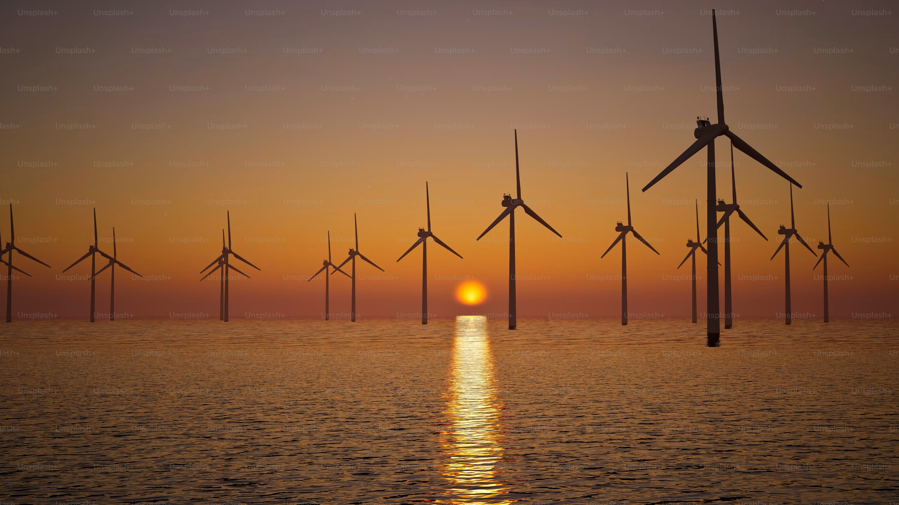
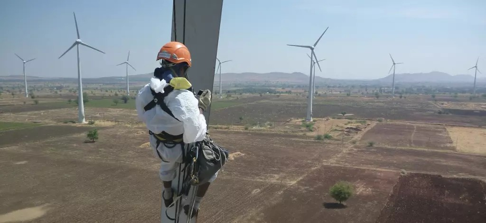
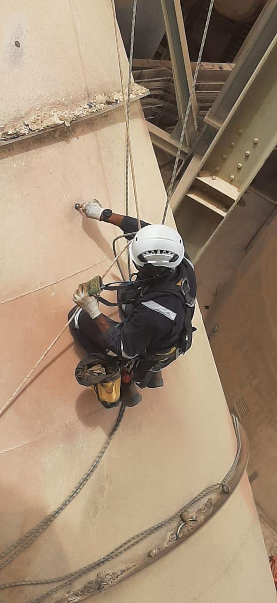
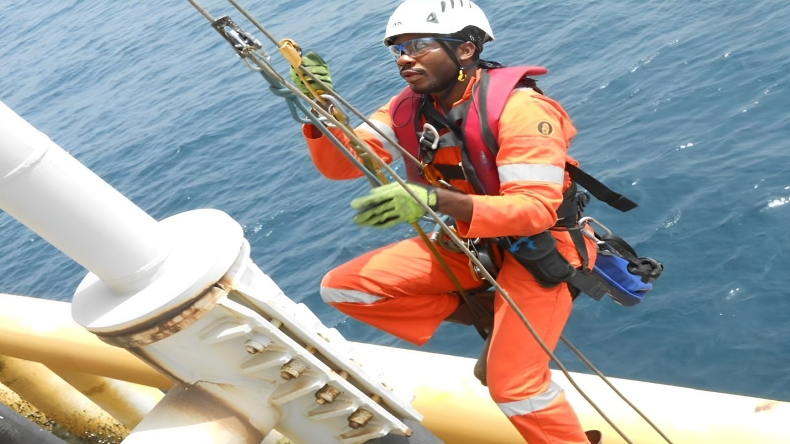

Rope Access & Wind Turbine Inspection Services

WRAT Industrial Access & Integrity provides specialist rope access inspection services supporting wind energy infrastructure and industrial asset integrity operations.
The company focuses on providing experienced rope access technicians to support wind turbine inspection campaigns and industrial structural inspection projects.
IRATA Level 3 Rope Access Supervisor and ASNT Level II Non-Destructive Testing Inspector with over 10 years of operational experience supporting offshore energy and industrial inspection operations.
Williams has supported inspection and maintenance projects in offshore energy environments including structural inspection, rope access operations and industrial asset integrity programs.
Through WRAT Industrial Access & Integrity, he aims to support wind energy service companies operating in Germany by providing specialist rope access inspection technicians during maintenance campaigns.

Rope access inspection support for wind turbine rotor blades, tower structures and nacelle components.

Non-destructive testing inspection support for industrial plants, structural steelwork and energy infrastructure.

Safe rope access solutions for inspection and maintenance work on elevated structures where conventional access systems are limited.
Download the WRAT capability brochure outlining services and subcontract cooperation with wind energy companies.
Download Capability BrochureWRAT Industrial Access & Integrity is seeking cooperation with wind turbine service companies and industrial inspection contractors operating in Germany.
The company provides specialist rope access technicians supporting wind turbine inspection programs and industrial asset integrity projects.
Email: wrat.integrity@gmail.com
LinkedIn: Williams Idoro Profile